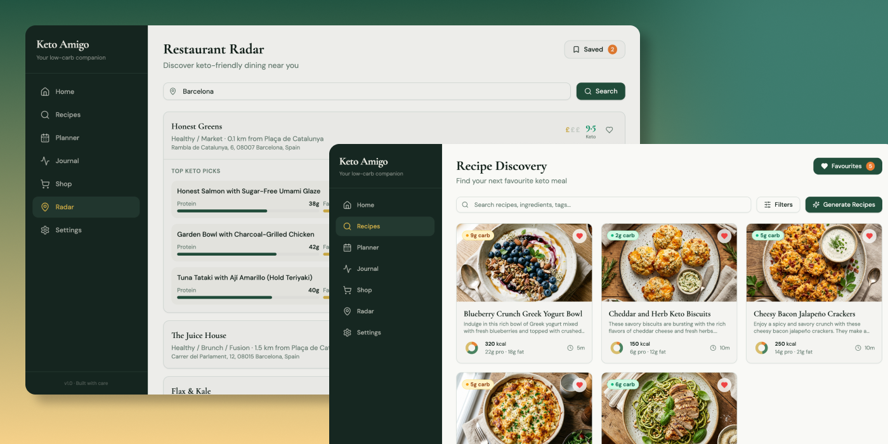
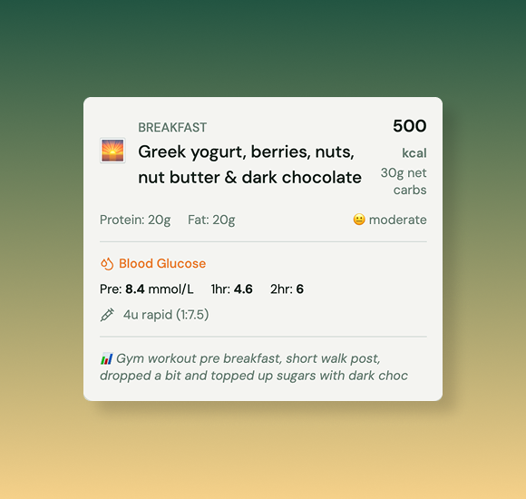
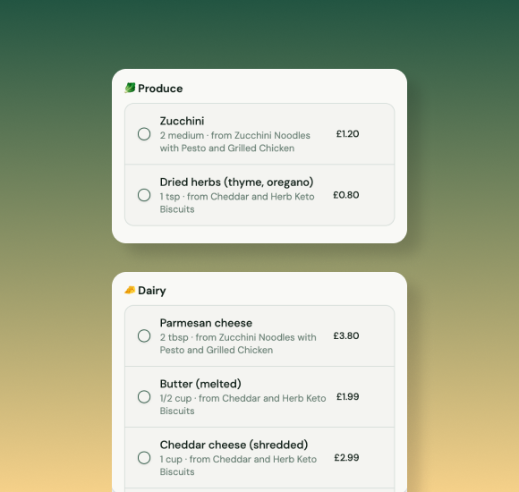

Background
Keto Amigo was designed for people managing ketogenic lifestyles alongside blood sugar conditions - a user base with real dietary stakes and zero tolerance for friction. The brief called for a full-featured mobile app: smart meal planning, AI recipe generation, restaurant discovery, and health tracking, all unified under a single, approachable product built for daily use.
Challenges
Building Keto Amigo meant taming real complexity. Crafting a cohesive dark-green design system across five distinct feature areas demanded rigorous component discipline. Wiring AI integrations for live recipe generation and real-time pricing data introduced latency challenges to navigate. The hardest task: making dense data flows - macros, insulin logs, weekly meal plans - feel effortless rather than clinical.


Outcomes
The result is a polished, production-ready companion that makes keto living genuinely manageable. A unified design language ties every feature together, while AI-powered recipe generation and restaurant radar work seamlessly in real time. Users move fluidly between meal planning, shopping, and health tracking - complex data made simple, and a product that feels as considered as the lifestyle it supports.